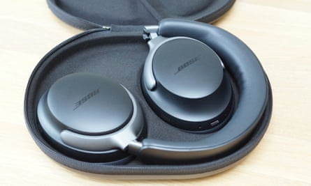
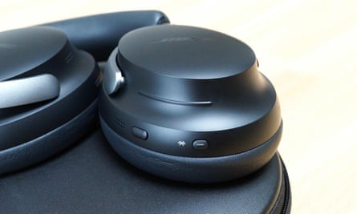
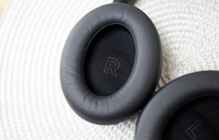
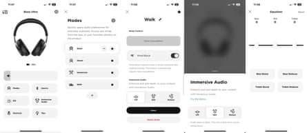
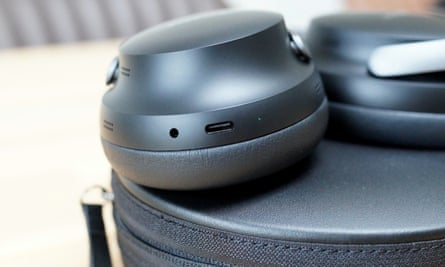

Bose’s latest top of the range headphones break new ground with a more premium look, advanced connectivity, immersive spatial audio and a supremely comfortable design. And a hefty price tag.
The QuietComfort Ultra headphones cost an eye-watering £450 (€500/$429/A$649) making them the most expensive Bose models to date, replacing the previous top-of-the-line £350 NCH700 from 2019 . They join the ranks of ultra premium headphones alongside Apple’s £500 AirPods Max and B&W’s £599 Px8.
Bose has gone back and updated its most popular shape from the longstanding QuietComfort series, creating a more polished version of 2022’s QC45 in the QC Ultras, which is no bad thing.
The headphones fold up for travel and come with a good, slim hard case to keep them safe.Photograph: Samuel Gibbs/The Guardian
The top headband and plush ear cushions are well padded with super-soft faux leather. The aluminium arms smoothly slide into the headband to adjust size, while the ear cups have a wide range of motion to fit to side of your head. They are easily the most comfortable set of headphones I’ve had the pleasure to wear, stealing the crown from Sennheiser’s Momentum 4 .
Responsive controls
The QC Ultra have a new touch-sensitive volume slider, which is responsive and easy to use. Press and hold on the middle of the slider to trigger a shortcut, such as changing the sound mode or starting Spotify. A single, double and triple press of the multi-function button handles playback controls, or press and hold it to switch noise cancelling modes. The power button also switches between Bluetooth devices, saying the name of each one as you cycle through, which is very handy.
The headphones pause when you take them off, go into standby after 10 minutes of not being worn and power down after 24 hours of sleep, or you can manually turn them off with the power button.
The touch-sensitive volume control works well with fingers and touch-screen gloves but not with regular gloves.Photograph: Samuel Gibbs/The Guardian
The battery lasts for a good 24 hours of playback with noise cancelling via Bluetooth, which is solid but cannot touch the market leaders that double that. Using the immersive sound mode reduces the life to about 18 hours, and the battery takes about three hours to fully charge through USB-C.
The QC Ultra can connect to two devices simultaneously and support Bluetooth 5.3 with the standard SBC and AAC audio formats. But they are also one of Bose’s first products to support instant pairing with Android and Qualcomm’s higher quality aptX Adaptive audio format, which is available on recent high end Android phones. They will support the new LC3 audio format with an update, which promises to greatly improve the Bluetooth experience in the near future with compatible devices, reducing latency and improving quality, future proofing the headphones. An included headphones cable handles wired listening.
Call quality is very good, both at isolating your voice from background noise and hearing the other end of the call, but the onboard mics cannot be used when connected with the headphones cable.
Specifications
- Weight: 250g
- Dimensions: 195 x 139 x 50.8mm
- Connectivity: Bluetooth 5.3 with multipoint, 2.5/3.5mm, USB-C charging
- Bluetooth codecs: SBC, AAC, aptX Adaptive
- Battery life: 24 hours
Sustainability
The ear cups are plush and spacious and do a good job of blocking outside sounds even without noise cancelling active.Photograph: Samuel Gibbs/The Guardian
The battery will last in excess of 500 full charge cycles but it is not replaceable by Bose, ultimately making the headphones disposable.
The headphones are generally repairable and some replacement parts, including ear cushions, will be available. The headphones do not contain recycled materials. Bose does not publish individual product environmental impact reports but does publish annual sustainability reports .
Top-class noise cancelling
The Bose Music app handles settings, updates and adjusts noise cancelling, sound modes and a basic equaliser.Photograph: Samuel Gibbs/The Guardian
The headphones match their supreme comfort with market-leading noise cancelling, which handles sudden and higher tones such as chatter better than anyone else. At maximum they can effectively reduce distractions, rumbles and unwanted sound, but new for Bose is a transparency mode that can guard against sudden loud sounds similar to Apple’s AirPods Pro 2 . It works well, providing awareness of what is happening around you while not being deafened by the screech of train wheels and other offensive sounds.
The headphones have up to seven different modes that can be customised to create different combinations of noise cancelling and sound modes for different situations, such as walking, working or at home and quickly switch between them.
New immersive audio for all
The QC Ultra have USB-C charging and a 2.5mm analogue socket for connecting the included headphones cable.Photograph: Samuel Gibbs/The Guardian
The Ultra are Bose’s first headphones to support immersive or spatial audio, similar to the best competitors. It works by simulating a set of stereo speakers sitting in front of you, making the music sound much wider and less direct into your ears. There are two options: “motion”, which does not track your head movement, and “still”, which makes it sound like the speakers are anchored in space in front of you even when you turn your head.
As with Jabra’s recent earbuds , the QC Ultra can perform their immersive sound trick regardless of which device or content you are listening to – good for those who use different brands of devices. It generally does a pretty good job of making movies and TV shows sound better, full of bass and impact. Music can be a bit hit and miss depending on genre or track; typically the grander musical score, the better the immersive mode sounds.
With it off for regular stereo the QC Ultra are Bose’s best-sounding headphones yet, with punchy and detailed audio across the spectrum with a slight emphasis on bass. They still have the firm’s rather clinical sound, which some may not like, but the advantage is that they sound really good at any volume, meaning you can listen to them quietly without missing parts of the track.
Price
The Bose QuietComfort Ultra headphones cost £449.95 (€499.95/ $429 / A$649 ).
For comparison, the QuietComfort headphones cost £299.95 , the QuietComfort Earbuds 2 cost £279.95 , the Sony WH-1000XM5 cost £319 , the Sennheiser Momentum 4 cost £309.99 and the Apple AirPods Max cost £499 .
Verdict
With any recent set of Bose headphones you can bank on top-class noise cancelling and good, clean sound. But with the QC Ultra, Bose has outdone itself with supreme comfort above all else. If you want a set of headphones you can wear all day, every day, these are the ones. And they fold down into a compact case for travel.
They support higher quality Bluetooth audio formats, which is a boon for Android and Windows users, while the cross-platform immersive audio feature gives TV shows and movies an extra boost. They will not beat Sennheiser or Sony on pure sound quality, but the Bose are excellent.
An eye-watering price, which is likely to come down in sales, and a lack of easy battery replacement options are the big detractors – if the battery wears out Bose won’t replace it, though third-parties might. If they live up to the legendary durability of previous QuietComfort headphones, however, you will at least be able to use them for a very long time.
Pros: supremely comfortable, best-in-class noise cancelling and good sound, immersive/spatial audio, great Bluetooth multi-point and aptX Adaptive support, fold up for travel, cross-platform companion app, can be used with a cable. Cons: very expensive, battery not replaceable by Bose, sound beaten by Sennheiser, mics cannot be used with analogue cable.